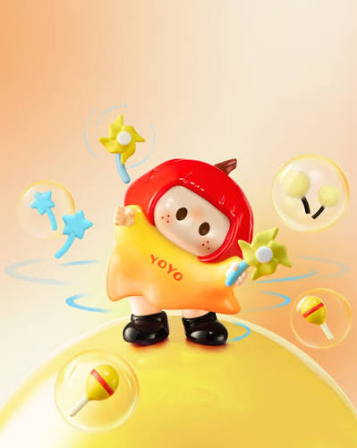

🎃
Iconic Look
YOYO's pumpkin-shaped head and simple dot eyes give the character an instantly recognisable style.
YOYO is a playful character associated with MINISO's growing original IP world. With a pumpkin-shaped head, tiny dot eyes and colourful outfits, YOYO turns ordinary everyday moments into something cute and comforting.

YOYO was introduced in 2025 and is built around everyday experiences, companionship and simple joy. The character is easy to recognise through its rounded pumpkin-like head, minimalist eyes and charming costumes. YOYO has since appeared in collectibles, plush products, exhibitions and themed MINISO experiences around the world.
YOYO's pumpkin-shaped head and simple dot eyes give the character an instantly recognisable style.
YOYO's character is inspired by ordinary moments, gentle companionship and finding happiness in little things.
YOYO appears across collectible figures, surprise boxes, vinyl plush and other character merchandise.
YOYO has appeared in international exhibitions and MINISO experiences outside China.
Different YOYO series use new outfits, colours and themes while keeping the character's familiar expression.
The character's soft shapes and cheerful personality make YOYO feel friendly, calm and comforting.
Need a little YOYO happiness? Click the button!